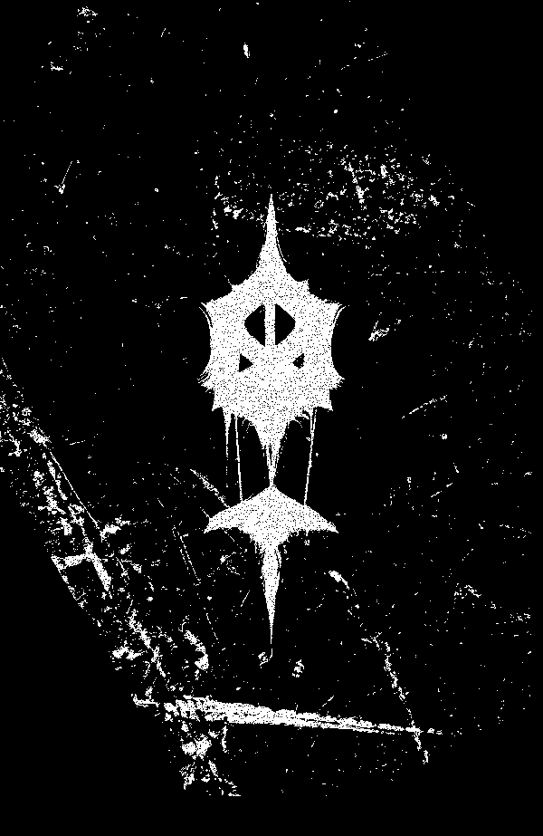
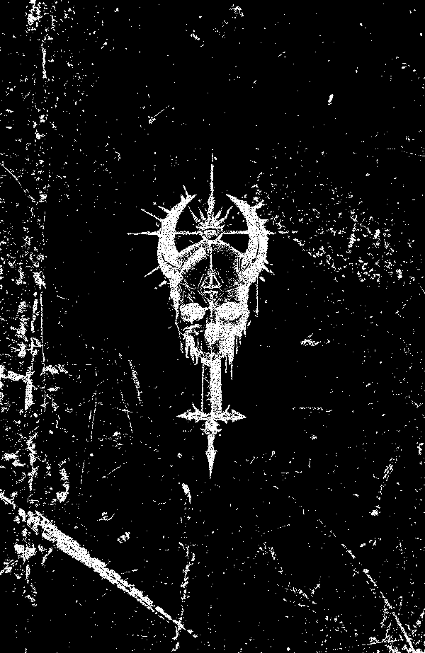
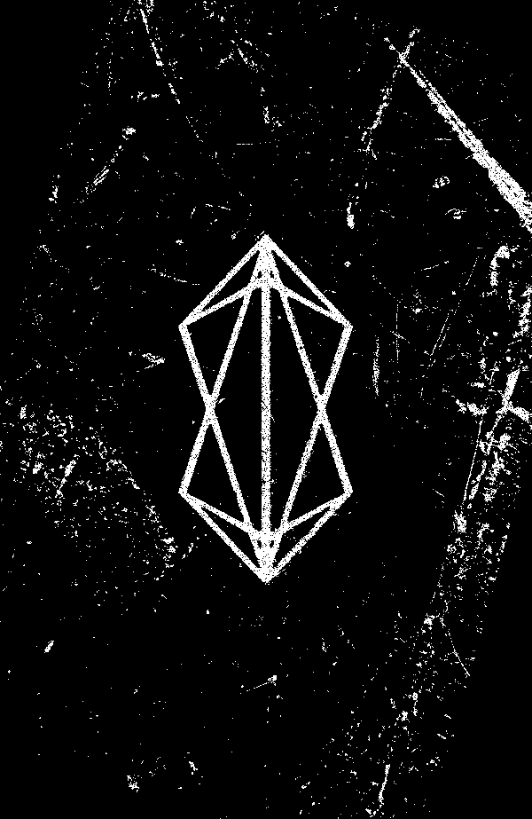

data collection//:[redacted]
push://#acolorlessdream
query #[become ~ god[
run://hellabove.seq.exe]
initiate:// reclaimation
bank 1
bank 2
praeliia
praeliia
harbinger
harbinger
ithurdune
ithurdune
[config.[corrosive-whisper] //:
//[SS] : i.c.a vol [redacted]
//class="last-ithurdune"
// #dest: "???"
.program [ruin]